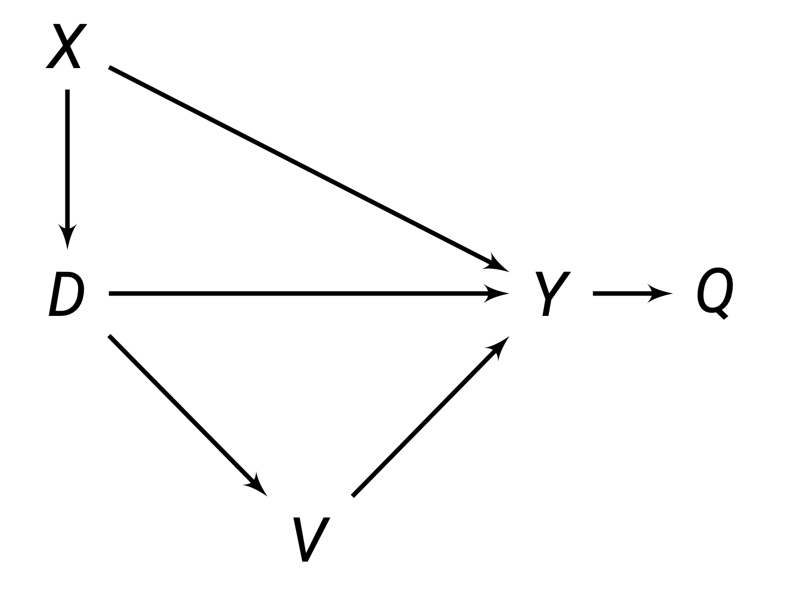
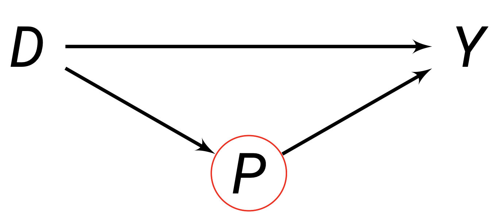
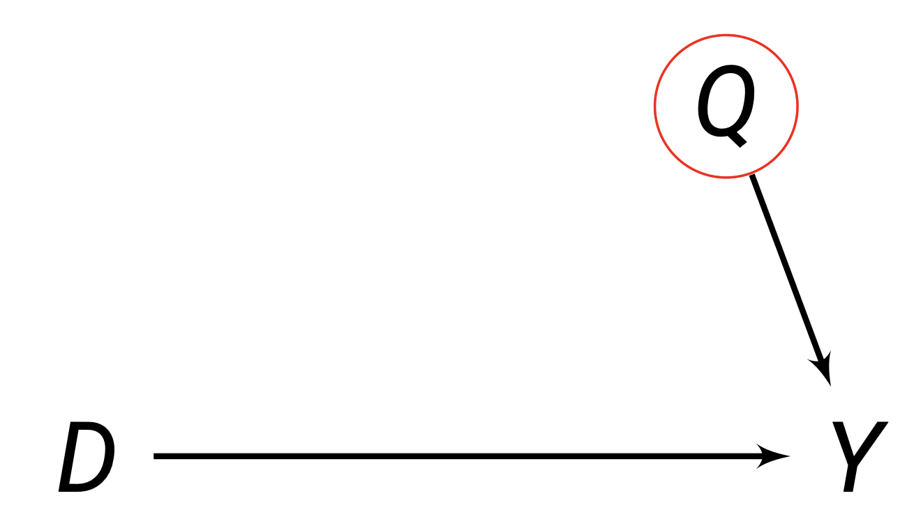

This chapter introduces the selection on observables framework, which allows us to identify causal effects by controlling for observable pre-treatment covariates. We discuss the main estimators, including subclassification, regression, and matching, as well as more advanced topics in sensitivity analysis and partial identification.
Identification
Pre-Treatment Covariates
A variable X is a pre-treatment covariate if:
- X is not caused by D (i.e. X does not change as a result of treatment D).
- X is associated with D (it causes selection into treatment D)

Above, we can see X is a pre-treatment covariate that affects D, and is not caused by D. V is not a pre-treatment covariate, since it is caused by D. Q is also not a covariate.
Identification Assumptions
In randomisation, we assumed independence of treatment from potential outcomes (also called ignorability). However, without randomisation, this assumption is not met.
For selection on observables, the assumptions needed for identification of causal effects are:
- Conditional Ignorability (also known as exogeneity or independence): Among units with identical covariate values X_i, treatment D_i is as-if randomly assigned. Or in other words, potential outcomes are independent from treatment within each specific covariate value X_i = x.
(Y_{0i}, Y_{1i}) \perp D_i \ | \ X_i = x, \quad \forall \ x \in \mathcal X
This implies that for a given value of a covariate X_i = x, we know:
\begin{split} E(Y_{1i}|X_i = x) = E(Y_{1i}|D_i = 1, X_i = x) = E(Y_{1i}|D_i = 0, X_i = x) \\ E(Y_{0i}|X_i = x) = E(Y_{0i}|D_i = 1, X_i = x) = E(Y_{0i}|D_i = 0, X_i = x) \end{split}
- Common Support assumption: a unit i with value of X_i, there is a probability that they could be assigned to both control D_i = 0 or treatment D_i = 1. So, there is no value of X_i where a unit i can only be either treatment or control.
0 < Pr(D_i = 1 \ | X_i = x) < 1 \quad \forall \ x \in \mathcal X
Imagine we have a theory that being abducted D causes turning out to vote.
Blattman (2009) finds that age is the primary way violent groups chose to abduct individuals: abduction parties released young children and older adults, but kept all adolescent and young males.
That means our theory is that age X affects selection into treatment D. Young children and older adults are less likely to get abducted D, while adolescent and young males are more likely D.
Proof of Identification
We have our assumptions as noted above. How do these assumptions help us find the ATE? We start with the conditional average treatment effect, conditional on some value of covariates x:
\begin{split} \tau_{CATE}(x) & = E(Y_{1i} - Y_{0i} \ | \ X_i = x) \\ & = E(Y_{1i}|X_i = x) - E(Y_{0i}|X_i = x) \\ & = \underbrace{E(Y_{1i}|D_i = 1, X_i = x)}_{\text{by conditional ignorability} \\ } - \underbrace{E(Y_{0i}|D_i = 0X_i = x)}_{\text{by conditional ignorability}} \\ & = \underbrace{E(Y_i|D_i = 1, X_i = x)}_{\text{observable outcome}} - \underbrace{E(Y_i|D_i = 0, X_i = x)}_{\text{observable outcome}} \end{split}
Now, let us discuss the ATE, and plug in the CATE to identify it:
\begin{split} \tau_{ATE} & = E(Y_{1i} - Y_{0i}) \\ & = \underbrace{\int \overbrace{E(Y_{1i} - Y_{0i} \ | \ X_i = x)}^{\text{CATE at }X_i = x} d \ \overbrace{Pr(X_i = x)}^{\text{prob of }X_i = x}}_{\text{weighted average, with weight being } Pr(X_i = x)} \\ & = \int(\underbrace{E(Y_i|D_i = 1, X_i) - E(Y_i|D_i = 0, X_i)}_{\text{using CATE proof above}})d \ Pr(X_i = x) \end{split}
This means the ATE is identified as the weighted average of all the conditional average treatment effects. The conditional average treatment effect is the difference-in-means of the observed Y_i at every possible value of X_i = x.
We can weaken our initial assumptions, and still calculate the ATT.
- Weakened conditional ignorability: Only Y_{0i} needs to be independent of D_i for units with the same covariates X_i. Or in other words, (Y_{0i}) \perp D_i | X_i = x. This implies:
E(Y_{0i}|X_i = x) = E(Y_{0i}|D_i = 0, X_i = x) = E(Y_{0i}|D_i = 1, X_i = x)
- Weakened common support: Pr(D_i = 1 |X_i = x) < 1.
Let us start with the conditional ATT:
\begin{split} \tau_{CATT}(x) & = E(Y_{1i}-Y_{0i}|D_i = 1, X_i = x) \\ & = E(Y_{1i}|D_i = 1, X_i = x) - E(Y_{0i}|D_i = 1, X_i = x) \\ & = E(Y_{1i}|D_i = 1, X_i = x) - \underbrace{E(Y_{0i}|D_i = 0, X_i = x)}_{\text{by weakened cond. ignorability}} \\ & = \underbrace{E(Y_i|D_i=1, X_i = x)}_{\text{observable outcome}} - \underbrace{E(Y_1|D_i = 0, X_i x)}_{\text{observable outcome}} \end{split}
Now, look at the ATT, and plug in CATT to identify it.
\begin{split} \tau_{ATT} & = E(Y_{1i} - Y_{0i}|D_i = 1) \\ & = \underbrace{\int \overbrace{E(Y_{1i} - Y_{0i}|D_i = 1, X_i = x)}^{\text{CATT at }X_i = x}d \ \overbrace{Pr(X_i = x|D_i = 1)}^{Pr(X_i = x) \text{ within treatment}}}_{\text{weighted average, with weight being } Pr(X_i = x)} \\ & = \int (E(Y_i|D_i = 1, X_i = x) - E(Y_i|D_i = 0, X_i = x))d \ Pr(X_i = x|D_i = 1) \end{split}
Even when all assumptions are met for identification of the ATE, the \tau_{ATE} can be different than the \tau_{ATT}. This is because the weights Pr(X_i = x|D_i = 1) for the ATT are different than the ATE Pr(X_i = x).
Graphical Identification
D-separation in DAGs corresponds to the assumption of conditional independence. Controlling for a set of nodes S can identify the causal effect of X \rightarrow Y, if:
- No node within set S is a descendant of X (no element of S results from X):
- The nodes within set S block all back-door paths from X \rightarrow Y.
Take this example: how can we identify the effect of D \rightarrow Y?
The sets identify the total effect of D on Y are:
- \{Z, M\}:
- \{M, Q\}:
- \{Z, Q, M\}:
Note that \{M\} alone does not block - this is because M is a collider. Similarly, \{Z, Q\} alone leave the backdoor path open through M.
Good controls block backdoor paths, which facilitate identification of the causal effect.
Bad controls are when we control for post-treatment variables. For example, P below is a bad control, since it is caused by D, so it is post-treatment.

You also never want to control variables that only predict D. These are bad because controlling for these removes variation in D that could be useful.
Neutral controls are ones that don’t identify the causal effect, but improve efficiency. For example, Q below affects Y, but there is no backdoor path. Controlling Q will not help identification, but can control noise in Y which may increase efficiency.
